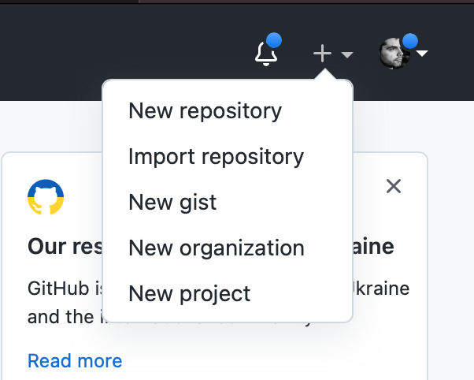
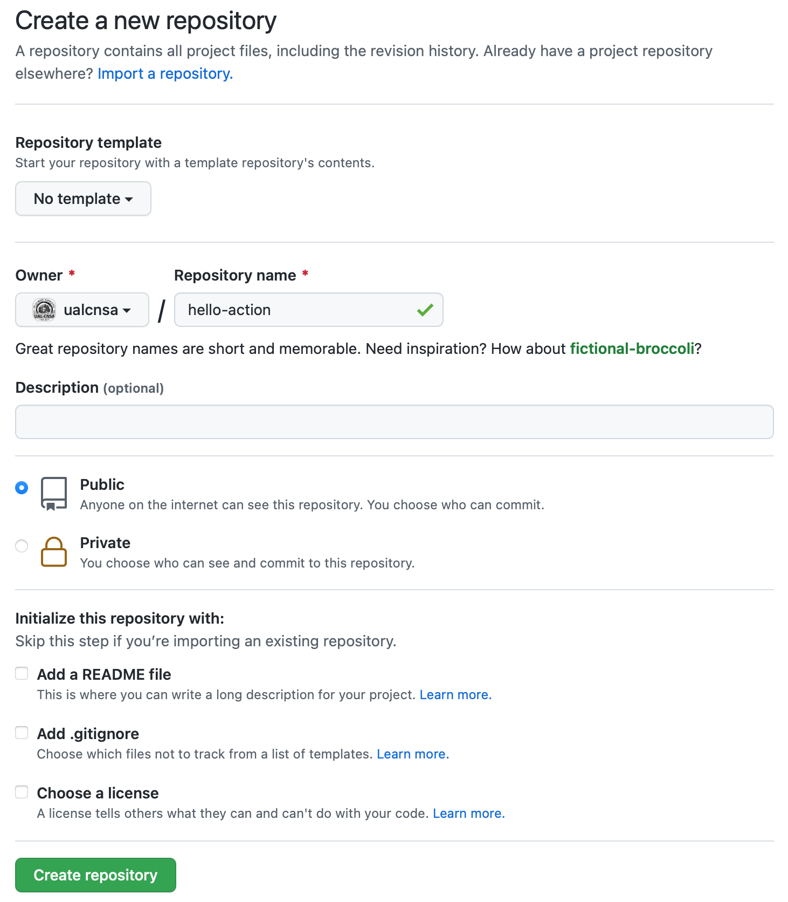
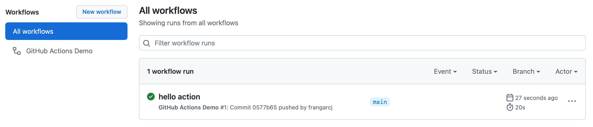
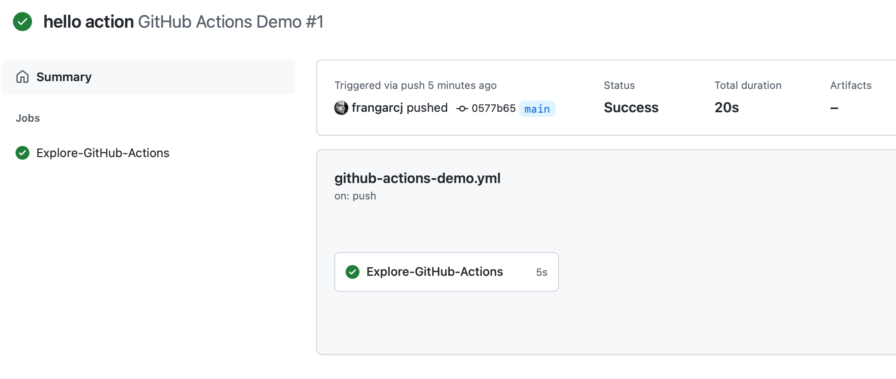
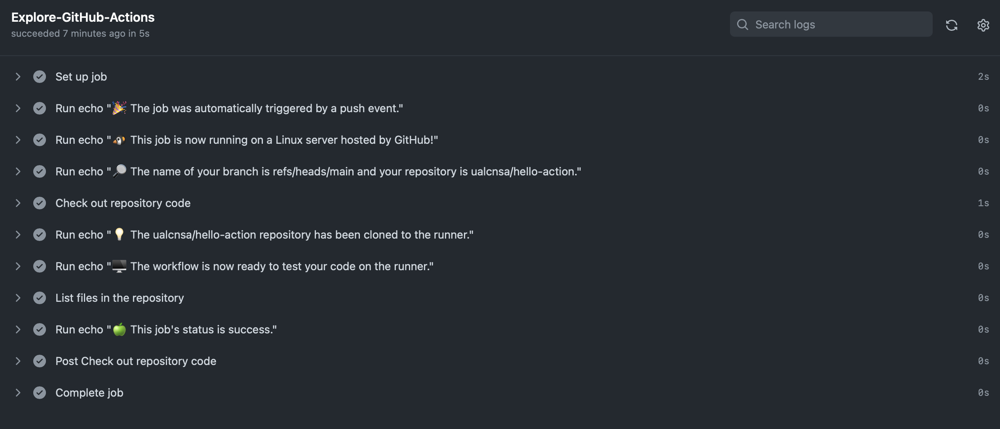

Comenzando con GitHub Actions
-
Comenzar a crear flujos de trabajo (workflows) de GitHub Actions.
-
Probar un flujo de trabajo sencillo para familiarizarse con la plataforma.
Introducción a GitHub Actions
GitHub Actions es una plataforma de integración continua y despliegue continuo (CI/CD) que permite crear flujos de construcción, test y despliegue en GitHub. Estos flujos de trabajo permiten crear y probar cada solicitud de cambios en tu repositorio o desplegar solicitudes de cambios fusionadas a producción.
Sus principales características son:
-
Permite automatizar los flujos de trabajo proporcionando capacidades de CI/CD a GitHub.
-
Construye, prueba y despliega tu código directamente desde GitHub.
-
Permite integrar las revisiones de código, manejo de ramas, resolución de incidencias y creación de releases.
-
Permite descubrir, crear y compartir
actionspara ejecutar cualquier trabajo que quieras.
Creación del repositorio
Para empezar a trabajar con GitHub Actions solo necesitas un repositorio alojado en GitHub.
Para ello seguimos los siguientes pasos:
-
Al lado de nuestro avatar de usuario, pulsamos en
+ > New Repository -
Creamos un repositorio llamado
hello-actionde tipo público.
|
Las GitHub Actions funcionan tanto con repositorios públicos como privados. Sin embargo, otras funciones como las GitHub Pages solo funcionan con los repositorios públicos. |
Creando tu primer workflow
A continuación, vamos a añadir un workflow que muestra las características esenciales de GitHub Actions.
Este ejemplo muestra como los trabajos de GitHub Actions pueden ser ejecutados automáticamente, donde corren y como interactuan con el código de tu repositorio.
-
Clona en tu equipo el repositorio creado anteriormente.
-
Crea un directorio
.github/workflows. -
En este directorio, crea un fichero llamado
github-actions-demo.yml. -
Copia el siguiente contenido YAML en el fichero anterior.
github-actions-demo.ymlname: GitHub Actions Demo (1) on: [push] (2) jobs: Explore-GitHub-Actions: (3) runs-on: ubuntu-latest (4) steps: - run: echo "🎉 The job was automatically triggered by a ${{ github.event_name }} event." (5) - run: echo "🐧 This job is now running on a ${{ runner.os }} server hosted by GitHub!" - run: echo "🔎 The name of your branch is ${{ github.ref }} and your repository is ${{ github.repository }}." - name: Check out repository code (6) uses: actions/checkout@v2 (7) - run: echo "💡 The ${{ github.repository }} repository has been cloned to the runner." - run: echo "🖥️ The workflow is now ready to test your code on the runner." - name: List files in the repository run: | ls ${{ github.workspace }} - run: echo "🍏 This job's status is ${{ job.status }}."1 Nombre del workflow. 2 Cuando se ejecuta el workflow. En este caso al hacer push en cualquier rama. 3 Nombre del trabajo. 4 Máquina donde se ejecuta el trabajo. 5 Comando de terminal bash. 6 Nombre del paso. 7 Reutilización de un actioncreada por otro usuario. En este caso es la que se utiliza para obtener el código del repositorio. -
Hacemos
commitde los cambios y hacemospusha la rama remotagit add -A && git commit git push origin main
Comprobando el resultado
|
Es posible que la GitHub Actions no se ejecute instantaneamente y tarde un poco en aparecer. Los recursos son compartidos entre todos los usuarios de GitHub. |
-
En la página principal del repositorio, selecciona
Actionsen el menú principal
-
En esta página podemos ver tanto el listado de workflows que tenemos en nuestro repositorio, como las ejecuciones de cada uno. Además podemos ver si ha habido éxito en la ejecución del workflow.
 -
Pulsamos en el nombre del commit (
hello actionen la imagen anterior) y accederemos a un resumen de la ejecución. En esta suelen aparecer las estadísticas de tiempo, los artefactos asociados y cada uno de los trabajos o jobs de nuestro workflow. -
Pulsamos en el nombre del trabajo (
Explore-GitHub-Actionsen la imagen anterior) y vemos una descripción de cada una de los pasos o steps del trabajo. -
Además podemos ver el log de ejecución de cada uno de los pasos.